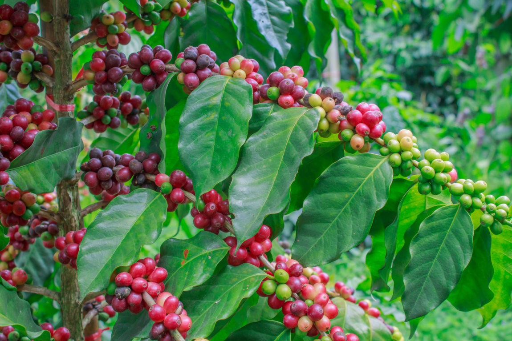

coffee plant
로스팅된 갈색의 커피콩은 다들 알아보겠지만 진짜 커피 나무는 이렇습니다.

coffee plant
로스팅된 갈색의 커피콩은 다들 알아보겠지만 진짜 커피 나무는 이렇습니다.
커피나무는 수확을 위해 가지치기되지만 9m 이상 자랄 수 있습니다. 각각의 나무는 서로 마주보고 자라는 두 쌍의 푸른 잎으로 덮여있습니다. 커피 체리는 가지를 따라 자라며, 연속적인 순환으로 자라기 때문에 한 그루의 나무에서 꽃과 푸른 열매, 익은 열매가 동시에 있는 모습을 볼 수도 있죠.